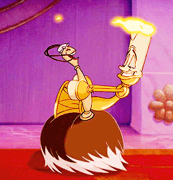

Era uma vez...
Personagens
Bela
É uma jovem inteligente e espirituosa que sonha viver aventuras e romance em um mundo muito além dos limites de seu vilarejo francês. Extremamente independente e introspectiva boa parte do tempo.
Fera
Outrora um Príncipe jovem e elegante que havia se tornado cruel e egocêntrico antes de ser transformado por uma feiticeira em uma Fera hedionda. Está preso no castelo até que possa aprender a amar outra pessoa e ser merecedor de receber o seu amor.

Gaston
É um camponês arrogante e superficial. Antigo herói de guerra, ele chama atenção na taverna da aldeia e tem todas as mulheres disponíveis da cidade na palma de sua mão. Gaston é consumido por rejeição e ciúmes.
Maurice
Pai da Bela, é um artista solitário especializado em lindas e únicas caixas-de-música, o que para Bela representa o mundo além dos limites de Villeneuve, mas para Maurice é uma forma de proteger sua filha ao mesmo tempo em que preserva memórias perfeitas de seu passado.
Lumière
É o mordomo francês do Príncipe que é transformado em um candelabro dourado. Frequentemente em conflito com Horloge, o relógio, e obcecado por Plumette, o espanador de penas, Lumière é encantador e sofisticado, e tem a capacidade de transformar uma simples refeição em um espetáculo musical elaboradíssimo.
Holorge
É o mordomo-chefe, minucioso e bastante nervoso que é transformado em um relógio pela maldição de uma feiticeira, detesta qualquer tipo de interrupção, preferindo que tudo funcione como um relógio.

Plumette
É a antiga doméstica do castelo que foi transformada em um espanador de penas atrevido, mas gracioso, que conquistou o coração do candelabro, Lumière.
Madame Samovar
& Zip
É a antiga governanta do castelo, agora é um bule de chá que ainda mantém seu sotaque londrino. Seu filho Zip, que foi transformado em uma xícara de chá, está preso no castelo com ela e os outros funcionários do castelo.

Madame de Garderobe
É a renomada diva, cantora de ópera italiana que se apresentava para o Príncipe quando a maldição foi lançada, tornando-se um imenso guarda-roupas. Ela reside no quarto de Bela no castelo, e além de vestir Bela, ela tem uma queda pelo melodrama e propensão a cochilos frequentes.
Minhas versões
Curiosidades
Objetos Encantados
Na versão original da história não existiam.Tentativa de Produção
Walt Disney tentou desenvolver A Bela e a Fera como animação duas vezes, em 1930 e 1950, mas desistiu porque os escritores acharam a história muito difícil de adaptar. Foi o sucesso de “A Pequena Sereia” que permitiu a existência de “A Bela e a Fera”.Excêntrica
Bela é a única pessoa em sua vila que usa roupas na cor azul. Isso simboliza o quanto ela é diferente das outras pessoas.